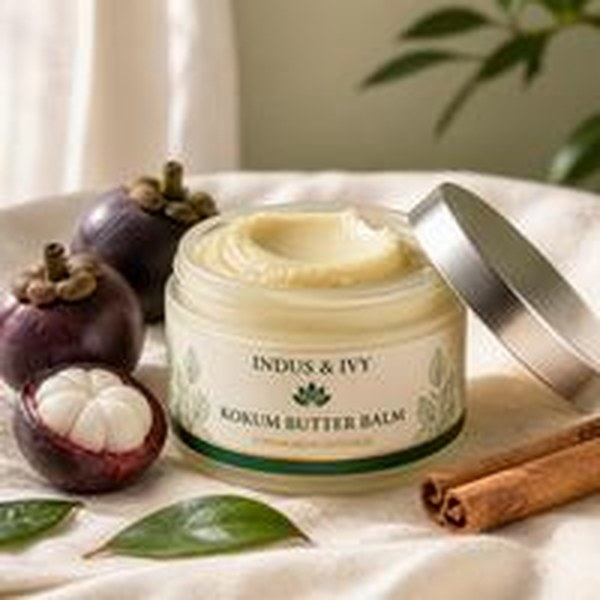

Available soon on Amazon US
Kokum Butter Balm infused with Cinnamon, for Heels, Elbows & Knees
A solid balm for dry, rough, cracked skin that lotions don't fix. It melts on contact and stays where you put it. There's no water in it, just butters and oils, so a little goes a long way.
- Size
- 1.76 oz50 g
- Ingredients
- 6listed below
- Price
- $15on Amazon US
Get launch-day access
Launching soon on Amazon
How to use
Apply generously to clean, dry heels, elbows and knees. Massage gently until absorbed. Best at night.
Good to know
- Not vegan: contains beeswax.
- Not tested on animals. Made in India.
- For external use only. Patch test before first use, and stop if irritation occurs.
- Diabetic or very sensitive feet? Check with your doctor first.
Coming next
Moringa Seed Oil
100% virgin, cold-pressed moringa seed oil for a light, dry-feeling body oil. Join the list to hear first and ask for a sample.
Get first access